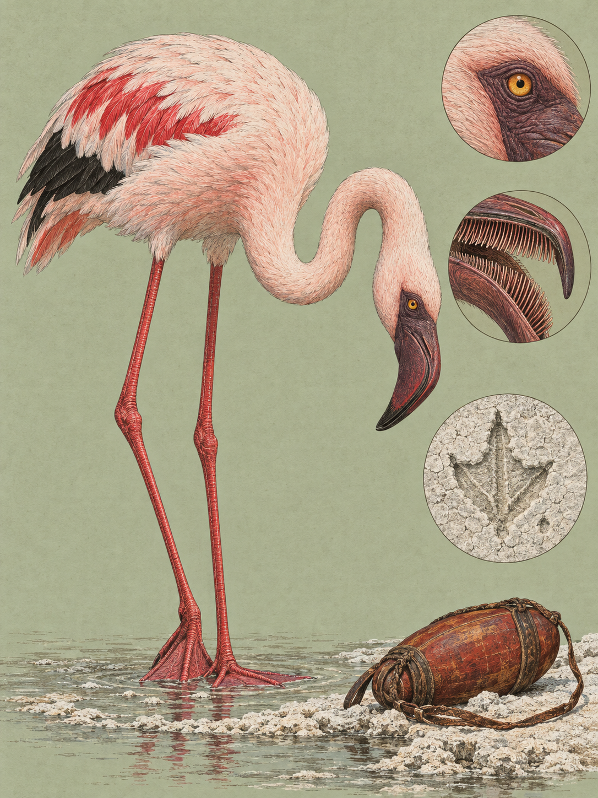

RIFT VALLEY
Phoeniconaias minor
Swahili: „Heroe mdogo“, „Heroe mwekundu“.

Am Ufer eines Sodasees liegt ein rosa Band im Wasser, und es bewegt sich. Das Wasser darunter ist stark ätzend. Seen wie der Bogoria oder der Natron erreichen Temperaturen von bis zu 70 Grad und einen pH-Wert von bis zu 10,5. Fast nichts lebt darin. Genau dort steht der Zwergflamingo auf feuerroten Beinen, senkt den Kopf verkehrt herum unter die Oberfläche und frisst.
Der wissenschaftliche Name nimmt die Farbe vorweg. Phoeniconaias setzt sich zusammen aus dem griechischen phoinix, karmesinrot oder purpurrot, und naias, der Wassernymphe: die karmesinrote Wassernymphe. Das Artepitheton minor ist lateinisch und heißt schlicht kleiner, gemessen an den übrigen Flamingos. Étienne Geoffroy Saint-Hilaire beschrieb die Art 1798 noch als Phoenicopterus minor. Erst 1869 stellte George Robert Gray für sie eine eigene Gattung auf, und zwar wegen des Schnabels. Ganz ruhig ist die Sache bis heute nicht. 2014 schlugen Torres und Kollegen vor, Phoeniconaias aufzugeben und die Art zu Phoenicoparrus zu stellen, und beide Namen laufen seither in der Fachliteratur nebeneinander her. Auf Swahili heißt der Vogel unter anderem Heroe mdogo.
Klein ist hier relativ gemeint. Der Zwergflamingo ist der kleinste Vertreter seiner Ordnung, misst stehend 95 bis 110 Zentimeter und wiegt 1,1 bis 2,7 Kilogramm, bei einer Spannweite von 95 bis 120 Zentimetern. Allein auf die Beine entfallen 60 Zentimeter. Die Iris ist gelb, orange oder rot und sitzt in einem nackten, purpurroten bis braunen Hautring, der dem Gesicht einen Ausdruck gibt, den Beobachter oft als wütend beschreiben. Im Flug öffnet sich ein Kontrast, den man am stehenden Vogel nicht sieht: Hand- und Armschwingen sind vollständig schwarz. Jungvögel tragen das alles noch nicht. Sie bleiben bis zum dritten oder vierten Jahr überwiegend grau, braun-rosa gescheckt und dunkel gestrichelt, mit dunkelgrauem Schnabel und dunkelgrauen Beinen.
Zwei Einrichtungen halten den Vogel in der Lauge am Leben. Die Beine tragen eine dichte Schicht widerstandsfähiger Hornschuppen, die das Gewebe darunter isolieren. Und weil er beim Fressen große Mengen Natriumkarbonat und Natriumchlorid aufnimmt, sitzen in seinen Nasenhöhlen Salzdrüsen, die das überschüssige Salz aus dem Blut holen und ausscheiden. Das eigentliche Werkzeug aber ist der Schnabel, der auf halber Länge einen scharfen Knick von 90 Grad nach unten macht. Penelope M. Jenkin hat seine Funktion 1957 im Detail vermessen. Er arbeitet in zwei Stufen. Außen bilden gröbere Plättchen bei einer Schnabelöffnung von vier bis sechs Millimetern ein Gitter mit Abständen von 1,0 mal 0,4 Millimetern; was größer ist, kommt gar nicht erst hinein. Innen stehen dicht gesetzte, diagonal angeordnete Plättchen, deren Fasern sich zu Fransen aufspalten, bis die Fläche samtartig wirkt. Ihre Abstände liegen bei 0,01 mal 0,05 Millimetern, also zwischen 10 und 50 Mikrometern. Genau in diesem Bereich bleibt das Cyanobakterium Arthrospira fusiformis hängen, das 40 bis 200 Mikrometer misst.
Die Pumpe dahinter ist die Zunge. Sie arbeitet als Kolben in der engen Rinne des Schnabels. Zieht sie zurück, entsteht Unterdruck und Wasser strömt ein. Schiebt sie vor, wird das Wasser durch die Lamellen nach außen gepresst, die Fransen richten sich auf und halten fest, was sie fangen. Wie schnell das geht, ist ungeklärt. Jenkin kam 1957 auf vier Pumpstöße in der Sekunde, spätere Beschreibungen nennen siebzehn, und der Widerspruch steht bis heute. Dazu kommt die Arbeit der Füße. Beim Durchschreiten des Wassers erzeugt der Vogel Wirbel, die größere Beutetiere von einem bis zehn Millimetern aufwirbeln und in Schnabelhöhe bringen. Unter der Oberseite des Oberschnabels sitzen Herbst-Körperchen, Tastsinnesorgane, die melden, was hereinkommt.
Damit schließt sich die Kette. Vulkanische Asche und Auswaschungen reichern die abflusslosen Senken des Grabenbruchs mit Natriumkarbonat an, Sonne und Verdunstung konzentrieren die Salze, das Wasser wird hochalkalisch und schließt fast alles Leben aus. Was bleibt, ist Arthrospira fusiformis, und für deren Massenblüten sind die Bedingungen ideal. Der Zwergflamingo besetzt diese Nische ohne Nahrungskonkurrenz, weil sein Schnabel als einziger Filterapparat auf diese Partikelgröße kalibriert ist. Selbst der größere Rosaflamingo (Phoenicopterus roseus) macht ihm nichts streitig, weil der den Schlamm nach größeren Organismen durchsucht. Und die Carotinoide aus den Bakterien, Canthaxanthin, Phoenicoxanthin und Astaxanthin, färben am Ende das Gefieder. Das Rosa ist nicht vererbt, sondern gegessen. Fehlt die Nahrung, verblasst es zu Weiß.
Gebrütet wird woanders. Der bedeutendste reguläre Brutplatz Ostafrikas ist der Lake Natron in Tansania. Dort legen die Paare, die eine Saison lang zusammenbleiben, je ein einziges Ei in ein Schlammnest von bis zu 30 Zentimetern Höhe und wechseln sich 28 Tage lang in Schichten von je 24 Stunden ab. Die Küken bekommen zunächst eine Nährflüssigkeit aus dem Kropf. Wenige Tage später stehen sie in Kindergärten von bis zu 100.000 Jungtieren zusammen, die zum Trinken Fußmärsche von bis zu 32 Kilometern zurücklegen. Vorher, bei der Balz, marschieren die Alten in Gruppen aufgereiht, schwenken gleichzeitig die Köpfe und spreizen die Flügeldecken ab.
Eine Kolonie am Lake Nakuru filtert bis zu 36 Tonnen Cyanobakterien am Tag, und genau das macht den Vogel zum Nomaden. Ende September, am Ende der langen Trockenzeit, stehen die Seen am salzigsten, die Blüte ist dicht, und die Schwärme stehen als große, kaum bewegte Fressgemeinschaften im Flachwasser. Mit den ersten Regen im Oktober steigt der Pegel, das Wasser verdünnt sich, und die Blüte bricht innerhalb von Tagen oder Wochen zusammen. Dann fliegen sie ab, teils sprunghaft. Strecken von bis zu 500 Kilometern legen sie bevorzugt nachts zurück, in V-Formationen, mit rund 60 Kilometern in der Stunde.
Wer Anfang Oktober an einem dieser Seen steht, sieht deshalb vielleicht nur weißen Sodaschlamm, Wasser und ein paar Federn. Oder er sieht das rosa Band, dicht am Ufer, mit einem leisen Murmeln darin, und weiß nun, aus welchem Wasser diese Farbe kommt.
Die IUCN schätzte den weltweiten Bestand 2018 auf 2.220.000 bis 3.240.000 Vögel und führt die Art seither als potenziell gefährdet, mit abnehmendem Trend. Das Netz der Sodaseen ist dünn, und es reißt schnell. Ende 1973 verendeten am Lake Nakuru Hunderte Vögel an einer Kombination aus Nahrungsknappheit und Vogeltuberkulose. Ende 1993, Ende 1995 und Ende 1999 starben an den kenianischen Seen Nakuru und Bogoria erneut Zehntausende. Zwischen 2010 und 2022 kam das Gegenteil von Trockenheit: Abholzung in den Einzugsgebieten und erhöhte Niederschläge ließen die Pegel von Baringo, Nakuru und Naivasha drastisch steigen, vertrieben Tausende Menschen, verstopften unterirdische Abflüsse durch Sedimente und verdünnten die Sodaseen. Das Chlorophyll ging zurück, und an den angestammten Plätzen brach die Nahrungsgrundlage ein. Dazu sammeln sich in abflusslosen Seen Industrieabwässer, Pestizide und Schwermetalle wie Blei, Kupfer und Zink an, die die Cyanobakterien verändern und die Gesundheit der Filtrierer gefährden. Älter als jede dieser Zahlen ist die Farbe. Im alten Ägypten stand die Silhouette eines Flamingos als Zeichen für das Wort „rot“, überliefert ist auch, dass der Vogel dort als Wiedergeburt des Sonnengottes Ra galt. Und im Wortstamm phoinix steckt dieselbe Wurzel wie im Mythos des Feuervogels Phönix.
Wo und wann: Lake Nakuru, Lake Baringo und Lake Naivasha. Der entscheidende Ort ist der Lake Oloidien, eine ehemalige, heute abgetrennte Bucht des Naivasha. Weil der Salzgehalt dort zwischen 2006 und 2013 auf 3 bis 6 Promille stieg, entstand eine massive Blüte von Arthrospira, und der kleine See diente zeitweise bis zu 250.000 Zwergflamingos als Ausweichquartier. Ist der Nakuru verdünnt, fährt man nach Oloidien. Beste Zeit sind Sonnenauf- und Sonnenuntergang, weil das weiche Licht das Rosa verstärkt. Abwarten lohnt für die aufgereihten Balzformationen mit dem schnellen Kopfschwenken, für die Fütterung der Jungtiere und für Formationsflüge. Der typische Fehler ist die schnelle Annäherung. Die Art reagiert sehr empfindlich auf Störung und laute Geräusche, und jedes Auffliegen kostet Energie, die beim Fressen fehlt.
Brennweite: 150 bis 600 und 100 bis 400 für Porträts und für den geknickten Schnabel im Wasser. 26 bis 60 nur statisch vom Stativ, für die Totale mit dem rosa Uferband.
Bild-Idee: die marschierende Reihe im Moment des Kopfschwenkens, aus der Distanz aufgenommen, mit der weißen Sodakruste des Ufers als Grundfläche.